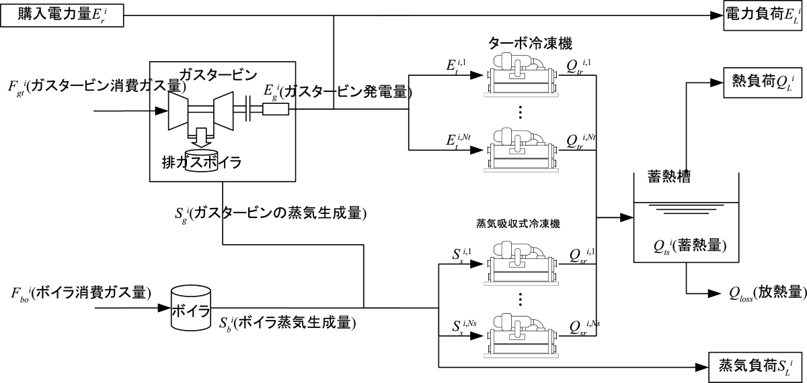

|
エネルギープラント運用計画のための最適化ベンチマーク問題
(Ver. 1)
発展版として，スマートコミュニティを考慮した問題 P1-2 (Ver. 2)も公開しております。 問題概要
エネルギープラントでは，発電機，ボイラ，熱源機器などさまざまな機器を用いて，電気，蒸気，冷温熱などのエネルギーを供給している。エネルギープラント運用計画問題は，各エネルギーの需給バランス，機器の機械的制約，および運用制約を考慮した上で，電力購入コストとガス購入のコストを最小にするような機器の運転状態を計画する問題である。
本問題では，図1に示すようなガスタービン1台，ボイラ1台，ターボ冷凍機1台，蒸気吸収式冷凍機2台のプラントの24時刻運用計画問題を提供する。
本問題の初出は文献[1]であるが，間違いが発見されたので，現在は訂正版を公開している。
現在掲載中の訂正版の定式化については，文献[2], [3]を参考にされたい。

図1：エネルギープラント（文献[1]から引用）
問題の部類・規模
- 問題のクラス：非線形混合整数計画問題
- 決定変数の数：240（連続：120，離散：120）
- 不等式制約条件数：288（線形：288，非線形：0）
- 等式制約条件数：134（線形：0，非線形：134）
Known Feasible Solutions
| 解法 |
目的関数値 |
制約違反 |
文献 |
報告者 |
解 |
| 合計値 |
許容量 |
| Iterative piecewise linear approximation + LP-based MILP solver |
3999631.278 |
2.44 × 10-10 |
1.0 × 10-9 |
[4] |
N. Inui, et. al. |
解† |
| ランダムサーチ + Tabu Search（離散変数）+ SQP（連続変数） |
3999635.845 |
6.43 × 10-12 |
1.0 × 10-10 |
[2] |
T. Okamoto, et al. |
解† |
| 切り上げ関数を用いた変換解法 + DE |
4052185.662 |
3.93 × 10-14 |
1.0 × 10-10 |
[2] |
T. Okamoto, et al. |
解† |
†取得したファイルをソースコード内の「P1_solution_x.txt」と差し替えて下さい。
ソースコード
参考文献
| [1] |
電気学会 情報知能システムの新展開とその産業応用調査専門委員会：「産業応用のための最適化ベンチマーク問題集」, 電気学会技術報告 第1287号, 3.2節 (2013) |
| [2] |
岡本卓，足立直紀，鈴木亮平，小圷成一，平田廣則：「エネルギープラント運用計画問題と最適化手法の適用例」，平成26年電気学会全国大会講演論文集，4-S21-6 (2014) |
| [3] |
R. Suzuki and T. Okamoto: "An introduction of the energy plant operational planning problem: A formulation and solutions", Proc. of the first IEEJ International Workshop on Sensing, Actuation, and Motion Control (SAMCON2015), IS1-5 (2015) |
| [4] |
N. Inui and K. Tokoro: "Finding the feasible solution and lower bound of the energy plant operational planning problem by an MILP formulation", Proc. of the first IEEJ International Workshop on Sensing, Actuation, and Motion Control (SAMCON2015), IS1-6 (2015) |
更新履歴
- June 5th, 2015: Known Feasible Solutionsに新たな解を追加。
- Dec. 4th, 2014: MATLAB版ソースコードを公開。
- June 3rd, 2014: 制約違反許容量を外部ファイルから読み込む形式に変更。
- Mar. 13th, 2014: 文献[2]に基づいたソースコードに差し替え。
- Nov. 7th, 2013: 文献[1]に基づいたソースコードを公開。
|
|